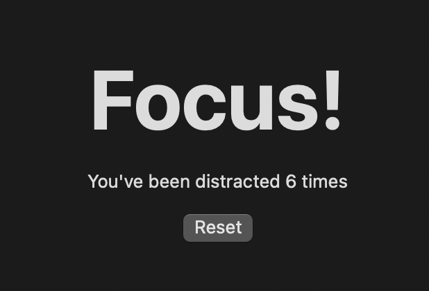

In Digital Minimalism Cal Newport prescribes a digital declutter where, for 30 days, you remove all optional technology from your life, then carefully re-introduce just what is useful.
I'm five days into this and have noticed something unexpected: the physical manifestations of my digital habits. I'm talking fist clenching, arm tensing and involuntary hand movements.
On my Mac, Discord is my biggest distraction – it's always in full screen mode, one trackpad swipe away. Instead of simply removing it, I did the obvious: create an application to sit between my desktop and Discord, which chides me for going to it and tracks how many times I do. It looks like this:

I've noticed three stages after using this for a few days.
1. Amusement. I unconsciously swipe to the Focus! window, go "Ha! Get back to work you git!" and swipe back to the desktop.
2. Anger. I start getting annoyed at how often I go to the Focus! window. I clench my fist and tense my arm when I see it, like an anti-reaction to the unconscious swipe that took me there.
3. Adjustment. I start swiping less, but my arm still tenses up in preparation to swipe.
Even now, after finishing that sentence, my arm tensed up. "You just finished a sentence" it says, "what if there's a funny Discord message waiting for you?"
Seeing the physical manifestation of this habit is pretty jarring.
Keeping my phone on the other side of the room had the same effect. I would go to grab it, find nothing, and start feeling around for it, then realise my hand is halfway down the back of the sofa checking under the cushions. It's impressive, the amount a brain can do on autopilot.
I think this is why removing these things (for a while) is the only option. Sure, you can consciously try to do these things less, but how do you unconsciously do them less? Either you remove them entirely, or put obstacles in front of them that make your conscious mind perk up and ask "wait, how did I get here?"
Finally, here's how many times I tried to go to Discord while writing this article:
| First draft | 5 times |
| Second and third drafts | 7 times |
| Final draft | 9 times |
21 times.
Whoops, make that 22 times.